01Magazin
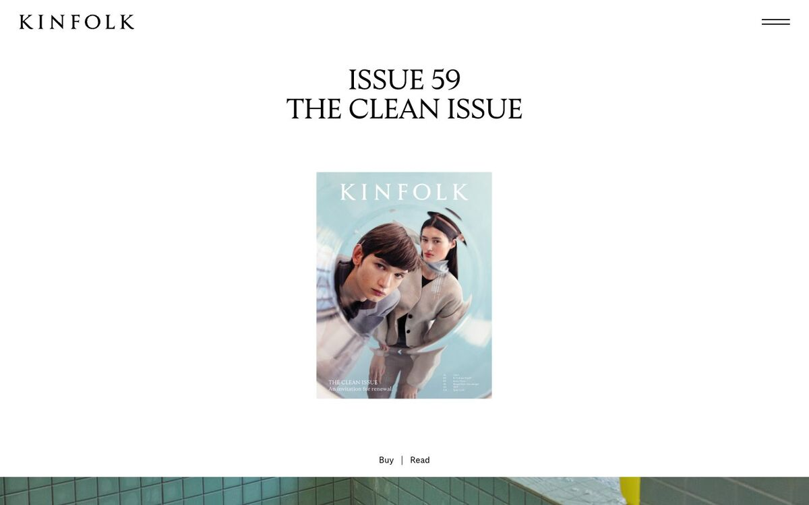
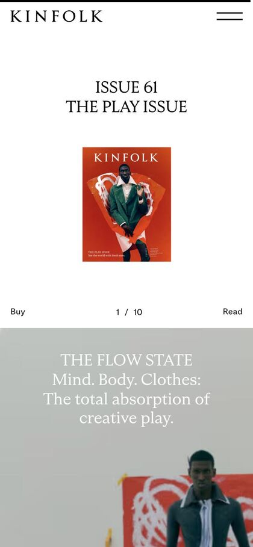
Kinfolk
Übernehmen: Einstieg wie ein Heft-Cover — zentrierte Serif-Zeile in Versalien über einem einzigen Hochformat-Bild, darunter zwei Links getrennt durch einen Haarstrich („Termin | Leistungen“).
Pageblitz · Designsystem 01 von 06 · Referenz-Board
Wonach gesucht wurde: helle Serifen-Display mit Kursiv, kleine gesperrte Versal-Kicker, Haarlinien, nummerierte Kapitel, Bildunterschriften wie im Heft, Bildpaare in zwei Größen, Papiertöne.
Quellen: Refero-Styles (Kinfolk, Monocle, Kobu, Aesop, MANNA u. a.) plus eigene Aufnahmen bei 1440 × 900 und 390 × 844 (Handy), Stand 10.10.2026.
Frage an dich: Welche Karten treffen Journal, welche fliegen raus? Pro Karte zählt nur der eine Satz „Übernehmen“ — nicht der ganze Look.


Übernehmen: Einstieg wie ein Heft-Cover — zentrierte Serif-Zeile in Versalien über einem einzigen Hochformat-Bild, darunter zwei Links getrennt durch einen Haarstrich („Termin | Leistungen“).
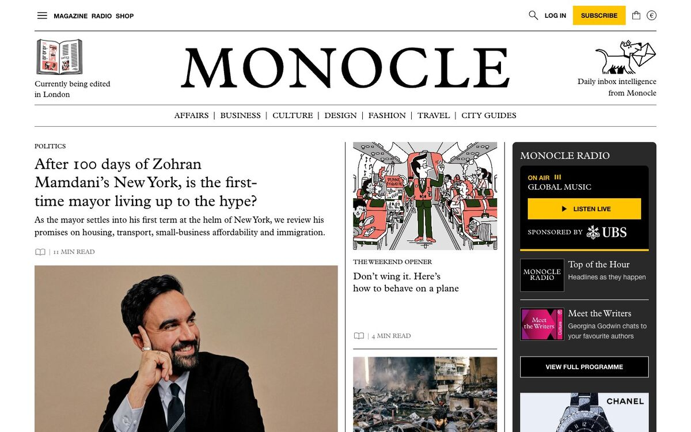
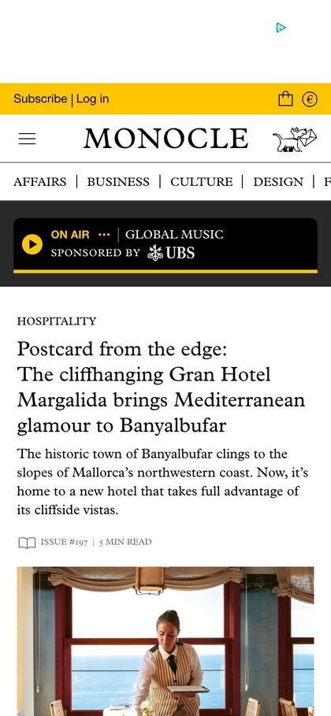
Übernehmen: Winziger Versal-Kicker über jeder Serif-Überschrift („HOSPITALITY“) und eine Rubrikenleiste, deren Punkte nur durch senkrechte Haarstriche getrennt sind.
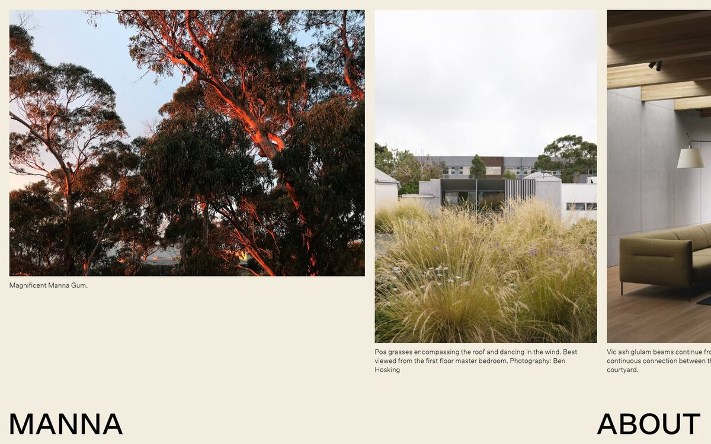
Übernehmen: Bildreihe aus ungleich breiten Fotos, jedes mit zwei Zeilen Bildunterschrift in 11 px linksbündig direkt unter der Bildkante — wie im Architekturheft.
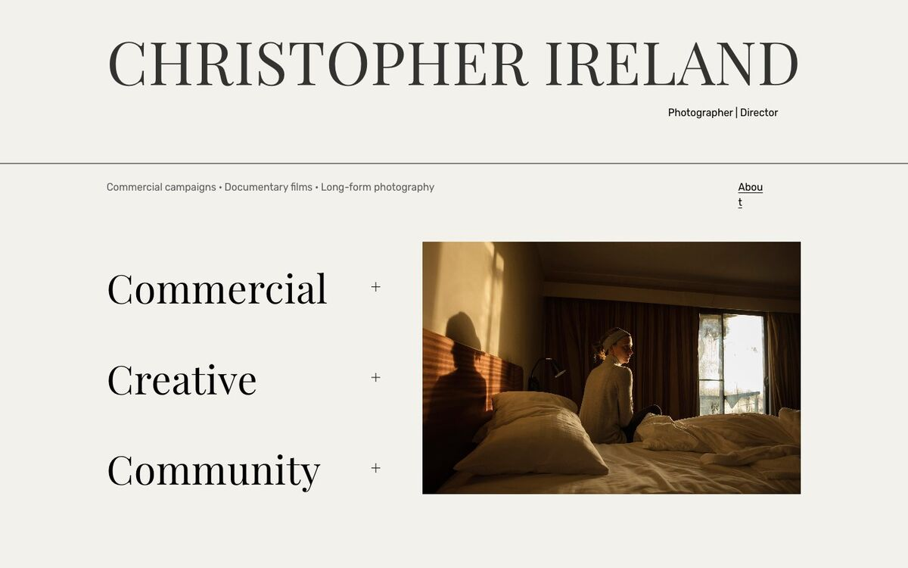
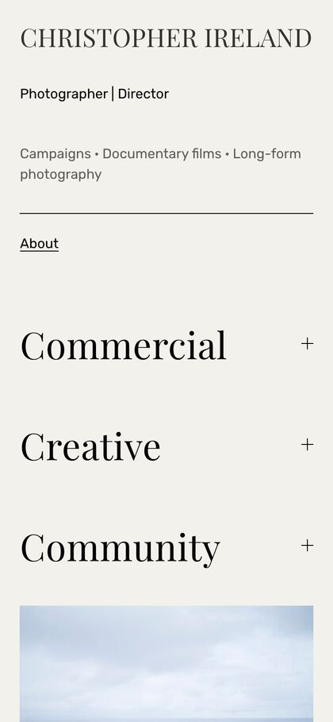
Übernehmen: Leistungen als große Serif-Liste mit „+“ am rechten Rand und Haarlinie unter dem Kopf — auf dem Handy bleibt die Liste genauso groß und wird zum Inhaltsverzeichnis.
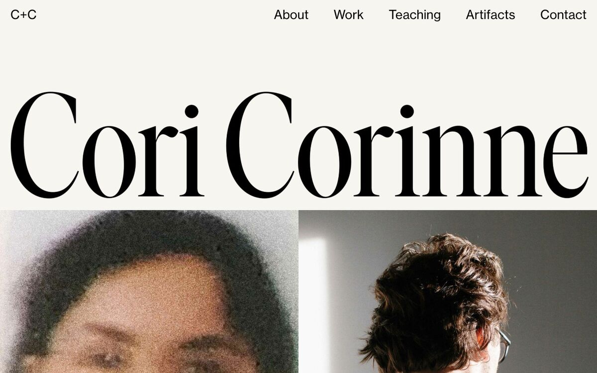
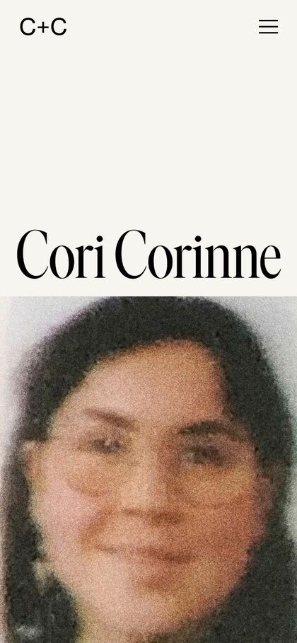
Übernehmen: Betriebsname als schmale Display-Serif über die volle Breite, Foto setzt ohne Abstand direkt an der Schriftlinie an — trägt auch auf 390 px als erster Eindruck.
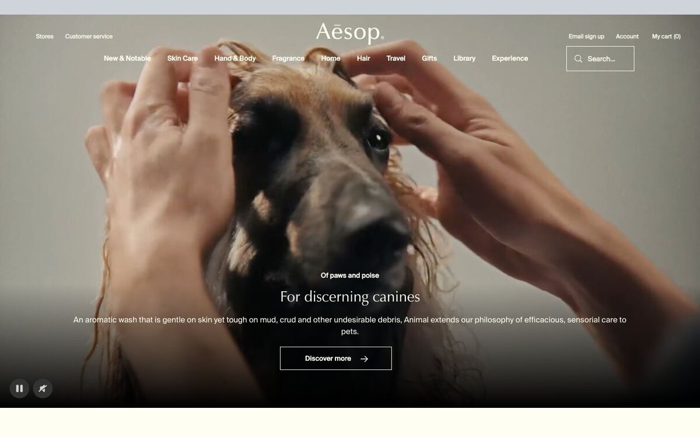
Übernehmen: Kleiner fetter Kicker über einer ruhigen Serif-Zeile, darunter ein Linien-Button mit Pfeil und 0 px Ecken — kein gefüllter Farb-Button im Kopfbereich.
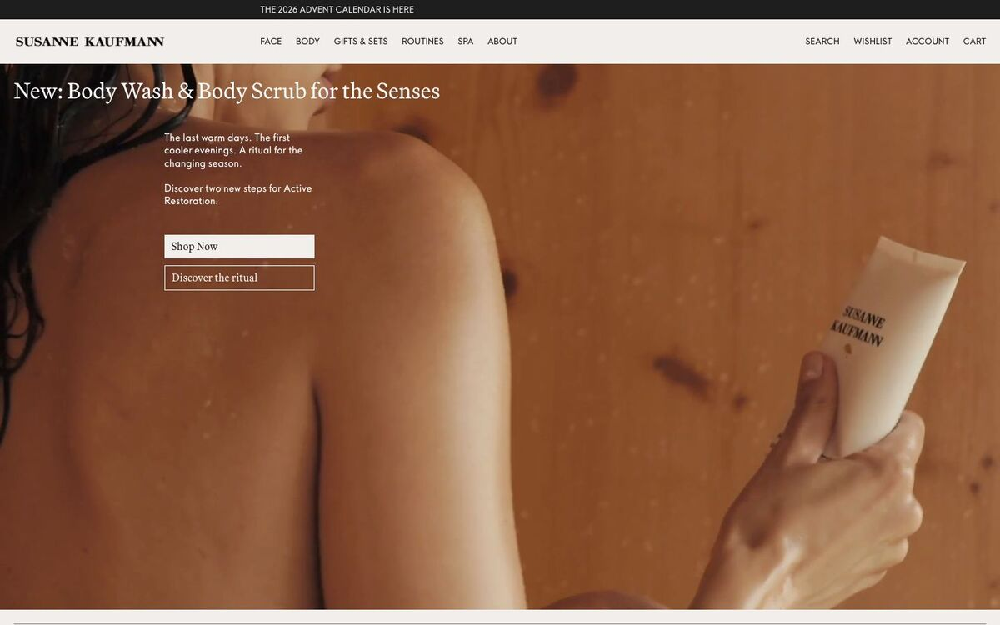
Übernehmen: Serif-Headline oben links direkt auf dem Foto, darunter zwei gleich breite Rechteck-Buttons gestapelt (Papier gefüllt + Linie) — auf dem Handy identisch.
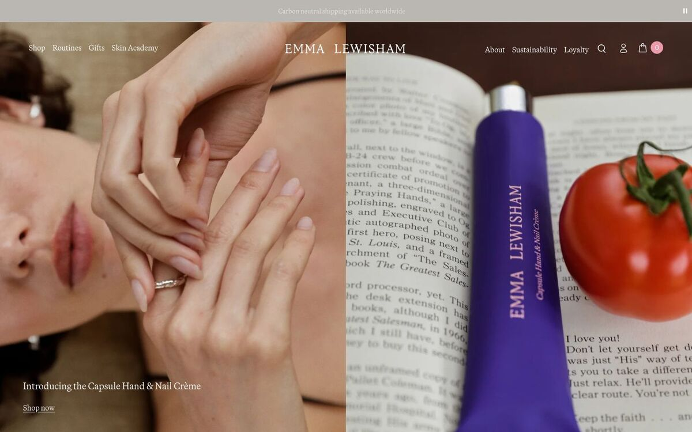
Übernehmen: Kopfbild als Bildpaar 50/50 (Nahaufnahme Mensch + Produkt/Detail) mit einer kleinen Serif-Bildzeile unten links statt großer Headline.
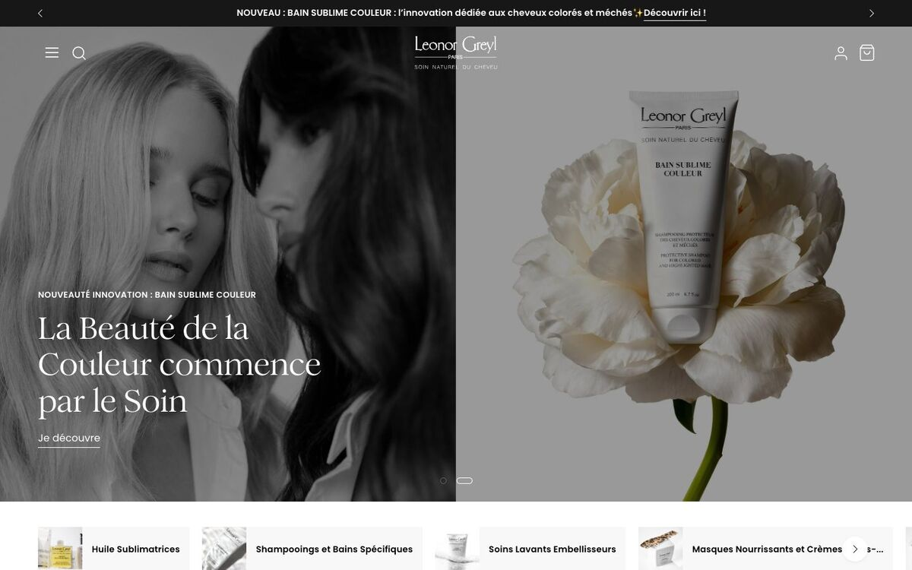
Übernehmen: Schwarz-Weiß-Porträt neben Farbbild, darüber links ein gesperrter Versal-Kicker und eine dreizeilige Serif-Headline mit unterstrichenem Textlink statt Button.
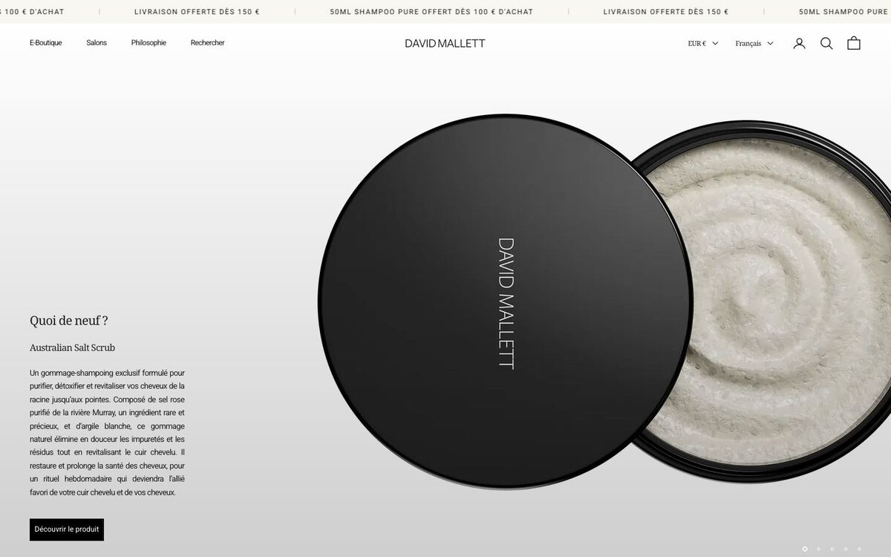
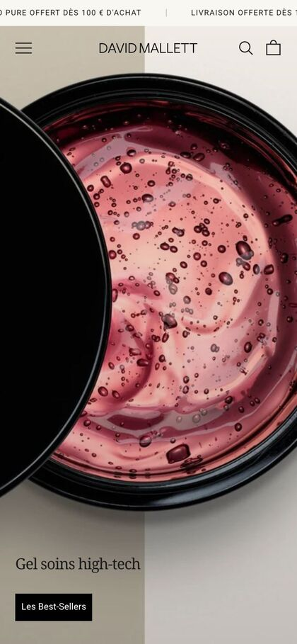
Übernehmen: Auf dem Handy füllt ein Bild den ganzen Screen, unten links nur eine Serif-Zeile und ein kleiner schwarzer Rechteck-Button — Desktop: schmale Textspalte links, Objekt rechts.
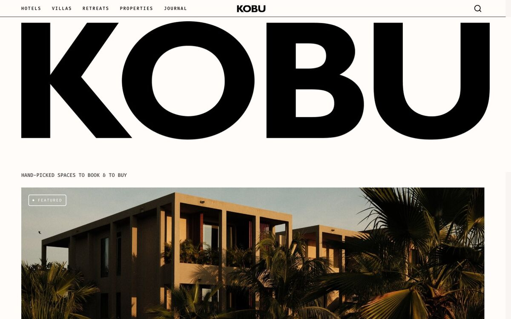
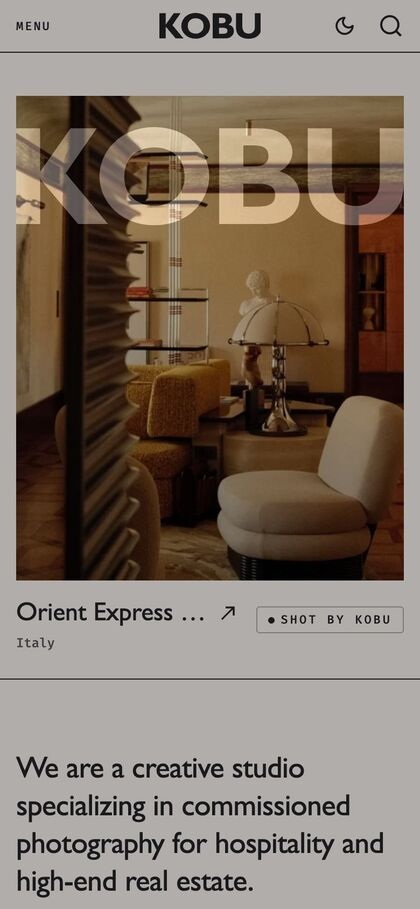
Übernehmen: Unter jedem Haus-Foto eine Bildzeile: Name groß, Ort in gesperrten Mono-Versalien darunter, rechts ein Credit-Etikett („Foto: …“) mit Haarlinie.
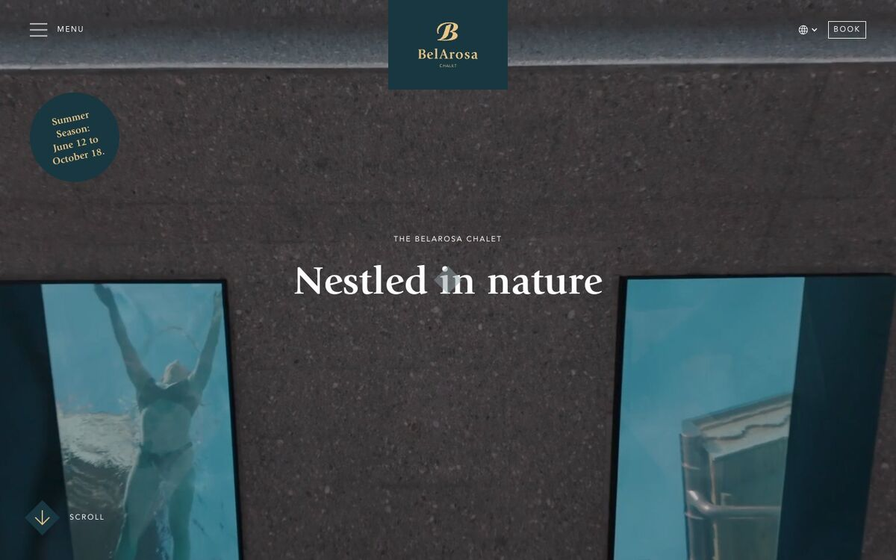
Übernehmen: Gesperrter Versal-Kicker („DAS BELAROSA CHALET“) zentriert über der Serif-Headline und „Buchen“ als feiner Linienkasten oben rechts statt Farbfläche.